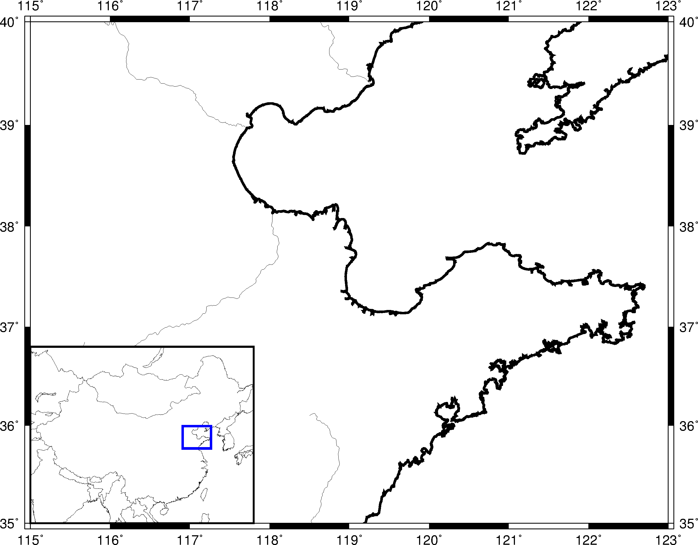
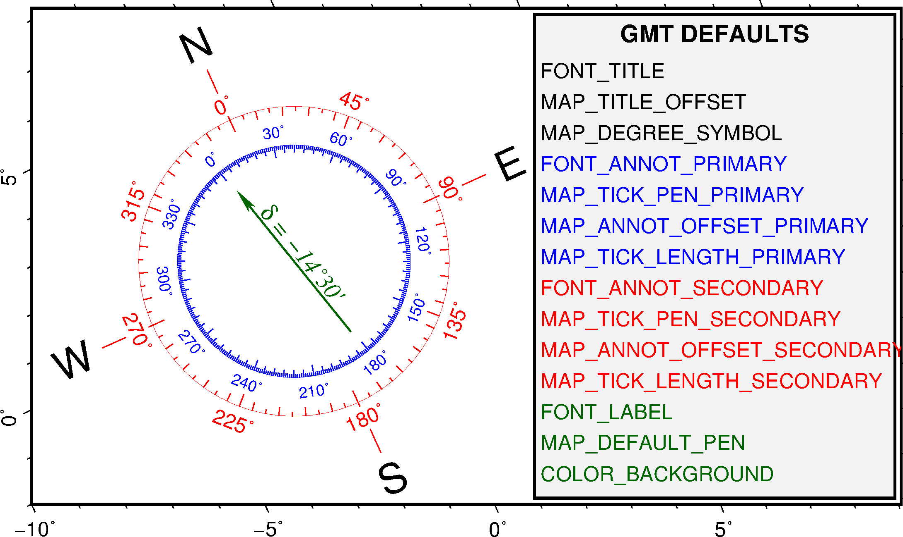

13.39 psbasemap¶
| 官方文档: | psbasemap |
|---|---|
| 简介: | 绘制底图 |
该命令用于绘制：
-B选项绘制底图边框（标注、刻度、标签等）和标题-L选项绘制比例尺-T选项绘制方向玫瑰、磁场玫瑰图
13.39.1 必选选项¶
-B -L -T 三个选项必须至少存在一个。
-B绘制底图边框。
-B选项是GMT的通用选项，见GMT中文手册中相关内容。示例:
gmt psbasemap -R-180/180/-70/70 -JM10c -Bx60 -By30 > test.ps
-L[g|j|J|n|x]<refpoint>+c[<slon>/]<slat>+w<length>[e|f|k|M|n|u][+a<align>][+f][+j<justify>][+l[<label>]][+o<dx>/[<dy>]][+u]在地图上指定位置绘制比例尺。
[g|j|J|n|x]<refpoint>指定地图上的参考点，详情见 绘制修饰物 一节+j<justify>指定比例尺上的锚点（默认锚点为比例尺的中心），详情见 绘制修饰物 一节+o<dx>/<dy>为比例尺设置额外的偏移量，详情见 绘制修饰物 一节+c<slon>/<slat>要绘制哪一个点的比例尺，对于倾斜投影，slon默认取中央经线+w<length>[e|f|M|n|k|u]比例尺的长度，默认单位为km，也可使用其他长度单位 单位+a<align>修改比例尺标签的位置，默认位于比例尺上方中部，可以取l、r、t、b分别代表左右上下+l<label>为比例尺加标签；若不指定<label>，默认的标签是比例尺所使用的长度单位+u比例尺的标注默认只有值没有单位，该选项会给所有标注加上单位+f默认是简单的比例尺，使用该选项则绘制fancy比例尺，即黑白相间的火车轨道比例尺
除此之外还有一些GMT参数可以控制比例尺的外观：
FONT_LABEL控制比例尺的标签字体FONT_ANNOT_PRIMARY控制比例尺的标注字体MAP_SCALE_HEIGHT控制比例尺的高度MAP_TICK_PEN_PRIMARY控制比例尺的线及刻度属性
示例:
gmt psbasemap -R90/110/30/40 -JM10c -Bx5 -By5 -Lg95/35+c35+w800k+lscale+u+f > test.ps gmt psbasemap -R90/180/-50/50 -Jm0.025i -Bafg -B+tMercator -Lx1i/1i+c0+w5000k > mercator.ps
-Td[g|j|J|n|x]<refpoint>+w<width>[+f[<level>]][+j<justify>][+l<w,e,s,n>][+o<dx>[/<dy>]]在指定位置绘制方向玫瑰图
[g|j|J|n|x]<refpoint>指定地图上的参考点，见 绘制修饰物+j<justify>指定玫瑰图上的锚点（默认为MC），见 绘制修饰物+o<dx>/<dy>指定参考点的偏移量，见 绘制修饰物+w<width>玫瑰图的宽度+f<level>绘制fancy玫瑰图，<level>指定了fancy玫瑰图的不同类型。<level>可以取：1绘制E-W和N-S四个方向2绘制8个方向3绘制16个方向
+l<w>,<e>,<s>,<n>为四个方向分别指定标签，默认标签是四个方向的单字母代码（英文语言下是W、E、S、N，具体值由参数GMT_LANGUAGE），四个方向的标签之间用逗号分隔，比如+lw,e,s,n或+l",,Down,Up"。标签的文字属性由 FONT_TITLE 控制
下图展示了方向玫瑰图的效果图：
{kind=link}
-Tm[g|j|J|n|x]<refpoint>+w<width>[+d<dec>[/<dlabel>]]][+i<pen>][+j<justify>][+l<w>,<e>,<s>,<n>][+p<pen>][+t<ints>][+o<dx>[/<dy>]]绘制磁场玫瑰图，用于展示磁场方向。
磁场玫瑰包括两个同心圆环，其中外环用于展示方向信息，内环用于显示磁场方向。
说明：
[g|j|J|n|x]<refpoint>指定地图上的参考点，见 绘制修饰物+j<justify>指定玫瑰图上的锚点（默认为MC），见 绘制修饰物+o<dx>/<dy>指定参考点的偏移量，见 绘制修饰物+w<width>玫瑰图的宽度+p<pen>绘制外环并设置其画笔属性+i<pen>绘制内环并设置其画笔属性+d<dec>/<dlabel>设置磁倾角以及罗盘指针上的磁倾角标签。若<dlabel>为空，则使用默认标签d = <dec>；若<dlabel>为-，则不绘制标签。当使用+d子选项时，会同时绘制地理方向和磁场方向+l<w>,<e>,<s>,<n>为四个方向的标签，默认标签是四个方向的单字母代码（英文语言下是W、E、S、N，具体值由参数GMT_LANGUAGE；若<n>取值为*，则会在北方向标签处绘制星代表北极星，也可以使用+l,,,N只指定N方向的标签- 内外环都可以设置标注、刻度和网格的间隔。内外环的间隔默认值都是
30/5/1。可以使用+t<ints>选项，后面接6个斜杠分隔的值，以分别指定两个圆环的 3种刻度值，其中前三个值控制内环属性，后三个值控制外环属性
13.39.2 可选选项¶
-A[<file>]不绘制图形，仅输出矩形底图的边框坐标。
该选项会将矩形底图的边框坐标输出到标准输出或文件中。使用该选项时，必须通过
-J和-R指定绘图区域，且不能同时使用其他选项。若不指定<file>则默认输出到标准输出，否则输出到文件<file>中。说明：
- 该选项似乎仅适用于矩形底图边框，非矩形边框会输出一堆NaN
- 尚不清楚该选项存在的意义
- 边框的采样间隔由参数
MAP_LINE_STEP决定
示例:
gmt psbasemap -R0/10/0/10 -JX10c/5c -Aoutline.txt
-D[<unit>]<xmin>/<xmax>/<ymin>/<ymax>[r][+s<file>][+t]
-D[g|j|J|n|x]<refpoint>+w<width>[/<height>][+j<justify>][+o<dx>[/<dy>]][+s<file>][+t]在底图中绘制图中图（inset map box），需要
-F选项，该选项有两种语法。先解释图中图（inset box）的概念。在绘制一个小区域时，为了表明该小区域在地球上的位置，通常需要在一张更大范围（比如整个中国或整个地球）的底图上标出小区域所在的位置，这种绘图形式通常称为inset map。而inset box就是inset map的边框。
指定inset map box的范围有三种方法：
-D<xmin>/<xmax>/<ymin>/<ymax>[r]：类似-R的语法，直接指定 inset box在地图上的范围-D<unit><xmin>/<xmax>/<ymin>/<ymax>：类似-R的语法，指定投影后的坐标范围，<unit>为投影后的坐标单位- 指定参考点和锚点，见 绘制修饰物 一节
[g|j|J|n|x]<refpoint>指定大区域底图上的参考点+j<justify>指定inset box上的锚点+o<dx>/<dy>指定参考点的额外偏移量+w<width>[/<height>]指定inset box的宽度或/和高度
+s<file>：将inset box的左下角位置以及其长宽写到文件中，坐标值以及长度值均使用当前地图单位+t将绘图原点移动到inset box的左下角
-F[d|l|t][+c<clearances>][+g<fill>][+i[[<gap>/]<pen>]][+p[<pen>]][+r[<radius>]][+s[[<dx>/<dy>/][<shade>]]]控制inset box、比例尺和方向玫瑰的背景边框的属性
说明：
- 该选项用于给inset box、比例尺和方向玫瑰绘制背景边框，默认同时控制三者的属性
d|l|t表示该选项定义的属性仅适用于-D、-L或-T选项- 直接使用
-F选项，则绘制背景边框，边框属性由参数MAP_FRAME_PEN控制 - 其他子选项的含义见 绘制修饰物 一节的详细介绍
13.39.3 示例¶
下面的脚本展示了一种inset box的用法：
#!/bin/bash
R=115/123/35/40 # 小区域地图的范围-R
J=M20c # 小区域的投影方式-J
PS=psbasemap_ex1.ps
# 打开GMT
gmt psxy -R$R -J$J -T -K > $PS
# 绘制小区域的地图
gmt pscoast -R$R -J$J -B1 -Df -W2p -I2p -N1/2p -A1000 -K -O >> $PS
# ...
# 此处可以任意添加其他绘图命令
# ...
# 开始绘制inset map
Rg=72/135/16/55 # 大区域地图的范围-R
Jg=M7c # 大区域地图的投影方式-J
# 绘制大区域地图的海岸线及边框
gmt pscoast -R$Rg -J$Jg -B0 -B+gwhite -Df -N1 -W -A5000 -K -O --MAP_FRAME_TYPE=plain >> $PS
# 在大区域地图内绘制小区域所在的方框
gmt psbasemap -R$Rg -J$Jg -D$R -F+p2p,blue -K -O >> $PS
# 结束GMT绘图
gmt psxy -R$R -J$J -T -O >> $PS
rm gmt.*

{kind=link}
用psbasemap命令-D选项绘制图中图
下面的脚本绘制了磁场玫瑰图：
#!/bin/bash
# $Id$
ps=psbasemap_ex4.ps
# Magnetic rose with a specified declination
gmt psbasemap -R-10/-2/12.8812380332/0.661018975345r -JOc0/0/50/60/7i -Baf -BWSne -P -K -X1.25i \
--MAP_ANNOT_OBLIQUE=34 --FONT_ANNOT_PRIMARY=12p > $ps
gmt psbasemap -R -J -Tmg-2/0.5+w2.5i+d-14.5+t45/10/5+i0.25p,blue+p0.25p,red+l+jCM -O -K \
--FONT_ANNOT_PRIMARY=9p,Helvetica,blue --FONT_ANNOT_SECONDARY=12p,Helvetica,red \
--FONT_LABEL=14p,Times-Italic,darkgreen --FONT_TITLE=24p --MAP_TITLE_OFFSET=7p \
--MAP_FRAME_WIDTH=10p --COLOR_BACKGROUND=green --MAP_DEFAULT_PEN=2p,darkgreen \
--COLOR_BACKGROUND=darkgreen --MAP_VECTOR_SHAPE=0.5 --MAP_TICK_PEN_SECONDARY=thinner,red \
--MAP_TICK_PEN_PRIMARY=thinner,blue >> $ps
gmt psbasemap -R -J -O -K -DjTR+w2.9i/3.9i+o0.05i -F+p+ggray95 >> $ps
echo "5.5 3.8 GMT DEFAULTS" | gmt pstext -R0/7/0/5 -Jx1i -O -K -F+f14p,Helvetica-Bold+jCM >> $ps
gmt pstext -R -J -O -K -F+f12p+jLM << EOF >> $ps
4.1 3.50 FONT_TITLE
4.1 3.25 MAP_TITLE_OFFSET
4.1 3.00 MAP_DEGREE_SYMBOL
4.1 2.75 @;blue;FONT_ANNOT_PRIMARY@;;
4.1 2.50 @;blue;MAP_TICK_PEN_PRIMARY@;;
4.1 2.25 @;blue;MAP_ANNOT_OFFSET_PRIMARY@;;
4.1 2.00 @;blue;MAP_TICK_LENGTH_PRIMARY@;;
4.1 1.75 @;red;FONT_ANNOT_SECONDARY@;;
4.1 1.50 @;red;MAP_TICK_PEN_SECONDARY@;;
4.1 1.25 @;red;MAP_ANNOT_OFFSET_SECONDARY@;;
4.1 1.00 @;red;MAP_TICK_LENGTH_SECONDARY@;;
4.1 0.75 @;darkgreen;FONT_LABEL@;;
4.1 0.50 @;darkgreen;MAP_DEFAULT_PEN@;;
4.1 0.25 @;darkgreen;COLOR_BACKGROUND@;;
EOF
gmt psxy -R -J -O -T >> $ps
rm gmt.*

{kind=link}
磁场玫瑰图
13.39.4 BUGS¶
- 使用
-A选项可以正常输出结果，但会出现double free的错误（v5.2.1）